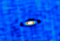
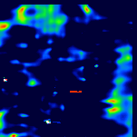
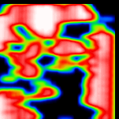
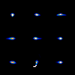
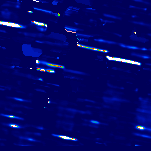
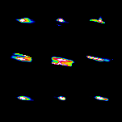
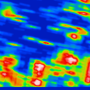

|
||||||

|
Users should be aware of the common artifacts that HIRES images may contain, inconsistent with the actual appearance of the sky. Many of these artifacts are described on this page. However, there may be other articacts that have crept into your images, and you are warned to carefully consider any features which seem unusual or confusing. There is more useful information at IRAS Data Characteristics. RingingA ring of low flux may appear around a point source. This ring can contain up to 10% of the flux of the point source. Ringing increases the uncertainty in the background estimation for aperture photometry. Ringing most commonly occurs on relatively high backgrounds. Changing de-striping methods or using a different flux bias may help. Blank Pixels/Coverage Depletion  
By default, HIRES discards any negative data values passed to it. With baseline removal de-striping in highly confused fields, baseline overestimation can result in large negative regions if no flux bias is applied. When these negatives are discarded, regions of low --- or in extreme cases, no--- coverage result. Also, in some cases, there may be very little actual detector coverage in a region. Regions of no or low coverage are prone to develop emission features which are clearly non-physical; they may appear sharp-edged and smaller than any point source in the field. Photometry in low coverage regions is suspect, even in the absence of artifacts. Low coverage regions are easily identified in the coverage map. Where the region has resulted from de-striping problems, changing the flux bias may help. This was a very common problem before the application of a flux bias was made the default with baseline removal de-striping. Aliasing  
Aliasing occurs typically at 12 and 25 µm in low coverage areas. Instead of being essentially a two dimensional gaussian, the effective beam takes on a highly complex, unreasonable shape, rendering interpretation of image structure exceedingly difficult. IMPORTANT --- Also read the IRAS Data Characteristics page.It contains information on stripes, optical crosstalk and other inherent problems in the IRAS data which may be particularly obvious in HIRES images. HIRES is AC calibrated. The IRAS detectors exhibited dwell-time dependent responsivity changes, especially at 12 µm. This is the IRAS data feature known as the "AC/DC effect". Previous IRAS image products have been calibrated on the DC scale, which is correct for structures on spatial scales greater than 30'. The AC scale gives flux densities commensurate with the Point Source Catalog (PSC2) for point sources. |